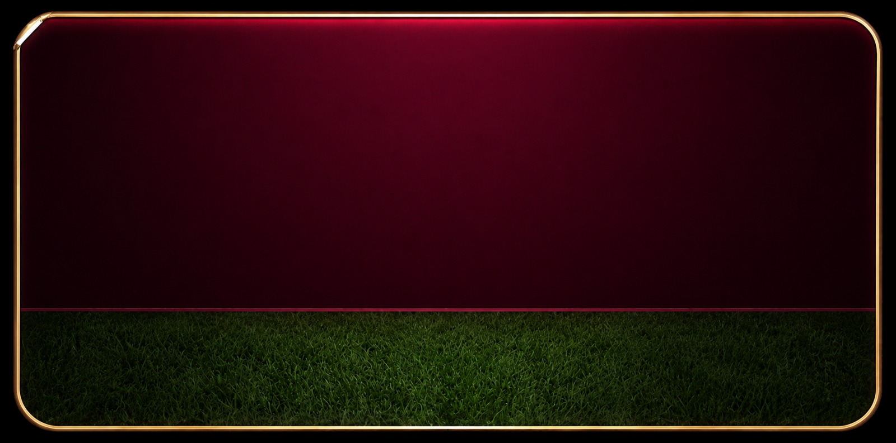

מזהים טכני (קבצים, פיקסלים, נוסחאות בבלוק קוד): LTR בתוך מסמך RTL.
מקור הנכסים (מדידה אמיתית)
| קובץ | יעד שימוש | Outer (px) | הערה |
|---|---|---|---|
assets/bg-clean-gold-bezel.jpg |
גרסת מסגרת זהב “שקטה” · יותר שטח לטקסט בצידים | 1600 × 793 | אחד מתוך 556/555 בחלק העליון; דשא אותו סטאק גובה 238; ההפרש הוא בשורת בורדו (+1). |
assets/bg-flames-glow.jpg |
גרסת “דחיפה חזקה” עם להבות בצדי המסגרת | 1600 × 794 | מתווה מאסטר להנחיות (מומלץ לאחד ל־794) |
אי‑התאמה #1
ההפרש
793 vs 794 משמעותו שהבורדו העליון נחתך ב־פיקסל אחד בהשוואת מאסטר; שטח הדשא מקורי אותו גובה (238px) — עדיין מסוכן לערבב סקיילים שונים באותה רשימה.
אי‑התאמה #2
בשכבת הלהבות אין מה ליישר טקסט עד הקצה הפיזי — חובה לבלוע שוליים צדיים גדולים יותר מתוך
safe zone (מתואר מתחת).
מפת אזורים (מה שיחיה בכל חלק)
פאנל בורדו עליון (~70% מגובה הקנבס)
- שורה עליונה · תצוגת סטטוס (למשל
פתוח) ובצידה מתאר ארוע (בית · תאריך). - מרכז · שני שמות קבוצות, דגלים, VS.
- תחתונה · שורת זמני שידור ונעילת ניחוש.
פאנל דשא תחתון (~30%)
- תוויות מצב הניחוש כמו «הבחירה שלך» ותצוגה קומפקטית של ציון שנבחר / חץ הרחבה.
- אל תנסו לפרוס כאן פס paragraphs ארוכים · זה שורת “רגל” בסגירה.
מפרט מידות חיצוניות מול פנימיות — מאטר 794
| מדד | כרטיס סגור (collapsed) | כרטיס מורחב (expanded layout) |
|---|---|---|
| Outer רוחב × גובה (אמנות) | 1600 × 794 פיקסלים (או ×793 אם SKU משני נשמר בכוונה) | 1600 × 1054 לדוגמה: 794 + Δ260 — Δ אינו גלוי בקבצים; בנייה בקומפוזיציה / הרחבה CSS |
| פרופורציית חלוקה אנכית (בקבצים הנוכחיים) | קו מתאר קשיח בין בורדו לדשא: @794 ⇒ בורדו 556px · דשא 238px. @793 ⇒ 555 + 238. | |
| Safe inner (טיפוגרפיה) — без להבות |
מתוך שפת הקנבס: top 20px · bottom 28px · L/R −28px כל צד רוחב עבודה: 1544 px · גובה פנוי כולל: 746 px (מחולק למעלה/מטה לפי קו הקנבס) |
|
| Safe inner + בליעת צדדים בשביל להבות | L/R −40px כל צד (מתוך 16 בסיס bezel + מרווח טקסט 12 מתוך “כיסוי להט”) → רוחב 1520 px | |
| רדיוס זווית משוער (לאסירת מסגרת) | בסקייל מאסטר חשבו ~118 px כ־floor(14.9% × 794) או הרחיבו בסקלה לפני ייצוא | |
W_outer = 1600 H_closed = 794 // SKU alt: 793 grass_px = H_closed - burgundy_top_px // 794: 556+238 ; 793: 555+238 s = width_on_screen / W_outer inner_L_R_no_flames = 16 bezel + 12 margin = 28px each side -> W_inner = 1544 inner_L_R_flames = 16 + 12 + 12 flame eat = 40px each side -> W_inner = 1520 H_outer_expanded = H_closed + delta // delta 220-340 recommended; demo uses 260
clean-gold bezel · 1600×793

555px burgundy · 238px grass @793
793×1600 px
flames+glow · 1600×794

≈556px burgundy · ≈238px grass @794
794 px tall ✓ master
דמו על המסך — סגור (composition)
שכבות UI מעל הרקע: אין בסיס מתוך הבסט לשגיאות — רק הגבלת מאסטר.
בית A — שישי 14.6
פתוח
ארגנטינה
VS
ברזיל
21:00 שעון ישראל · ננעל ב‑20:55
2
הבחירה שלך
דמו על המסך — מורחב (אין אמנות נוספת)
אי‑התאמה אמיתית #3 JPG הוא רק פריים בסיסי הגובה. המשך ההרחבה חייב panel נוסף, דשא מוארך בריצוף או משטח טקסט אחיד מתחת — אחרת הגזרה נחתך.
מש/compare — אותה רוחב, גובה לא סטנדרטי
7931pxΔ
794 master
Recommendation: unify exports to ONE height (794) · bottom-align grass texture · regenerate the 793 SKU or pad +1 transparency row
RTL / הנחיות יישום קצרות
- start-of-line ב־RTL = ימין: סטטוס ומתאר בשורה העליונה בחרו מהכיוון ההפוך אם מתנגשים עם יחסי מתאר מתוך מאסטר צילום זר.
- LTR segments (
VS, קוד משחק וכד') עטף ב־dir=ltr unicode-bidi:isolate. - בדיקות QC מדודות לפני ייצוא: קו הגילוח בדיוק ברוחב הקובץ במקום אחיד; הרדיוס אחיד בשלוש הפינות הגלויות.